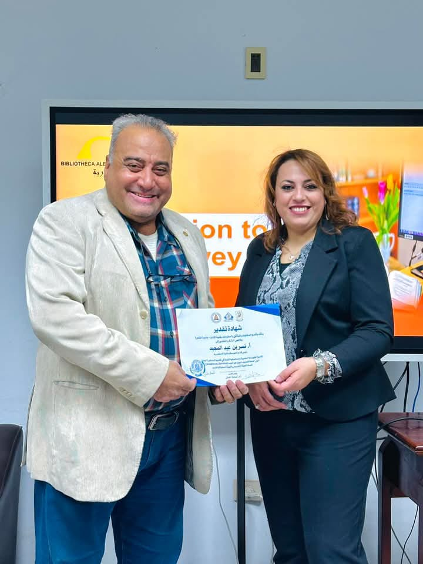
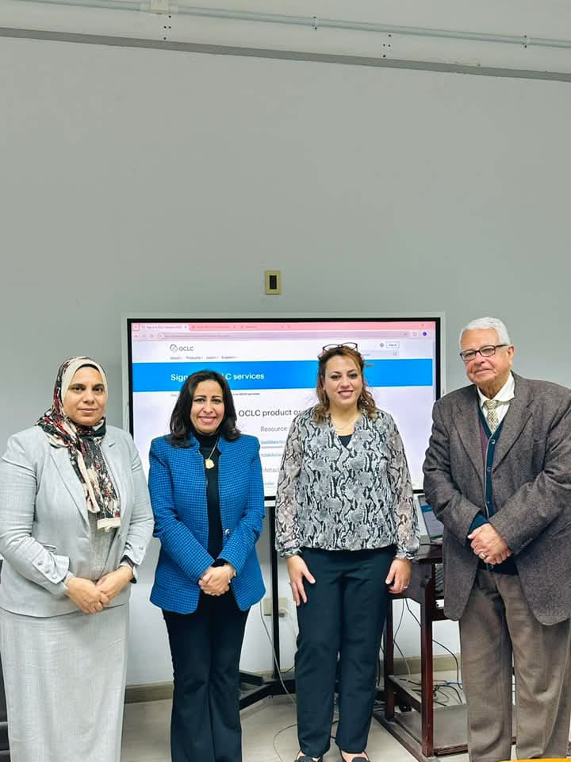
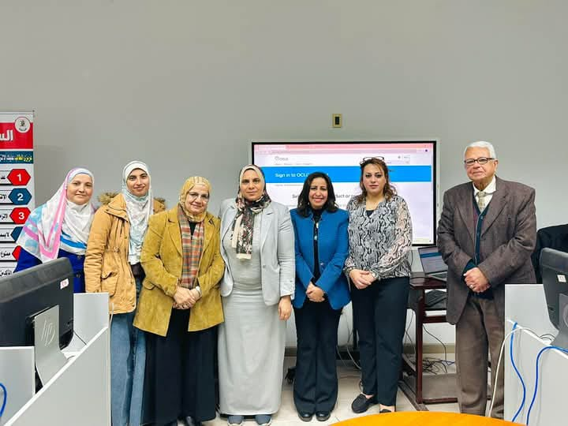
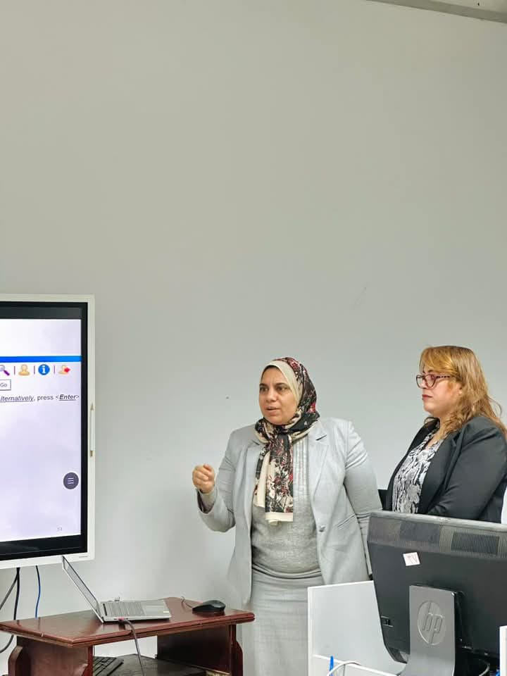
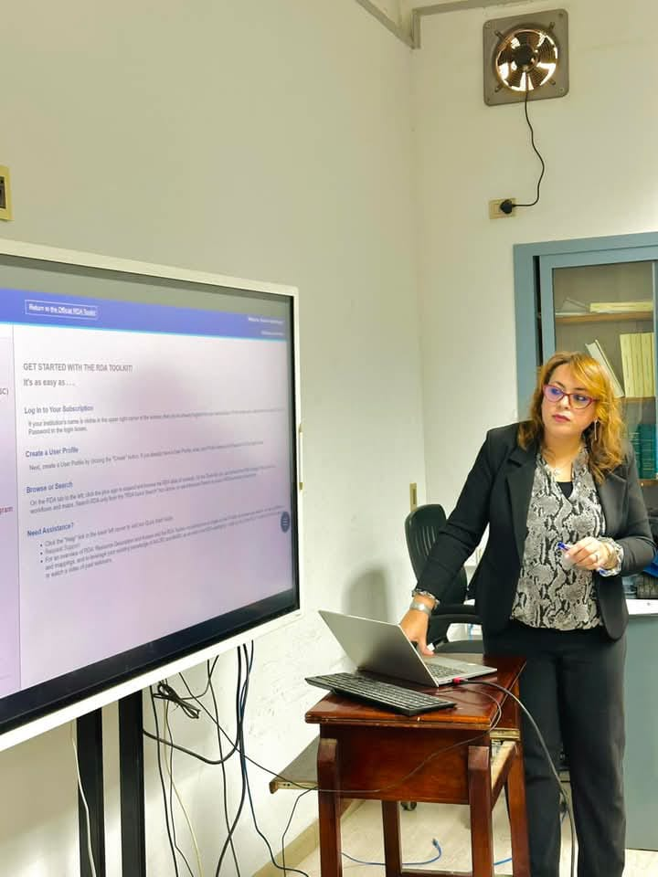
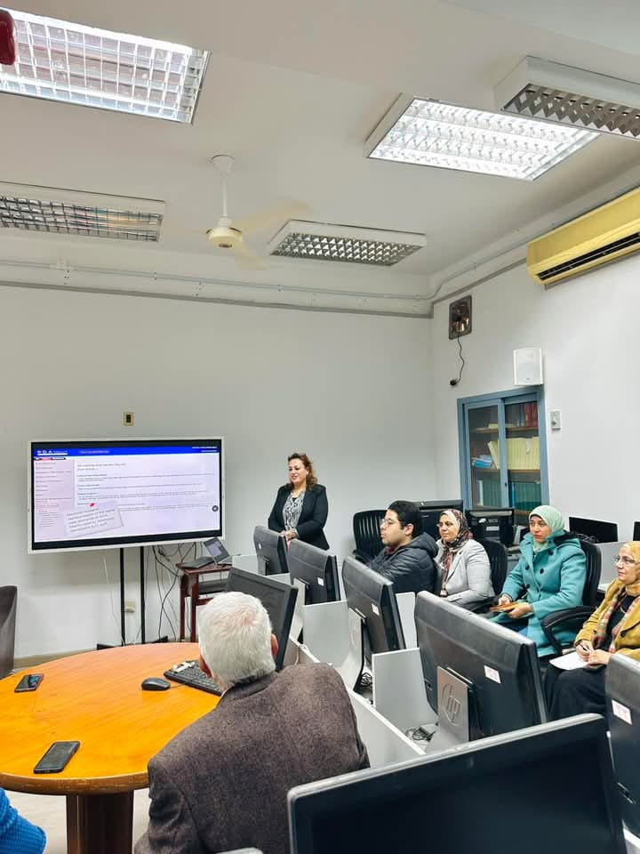
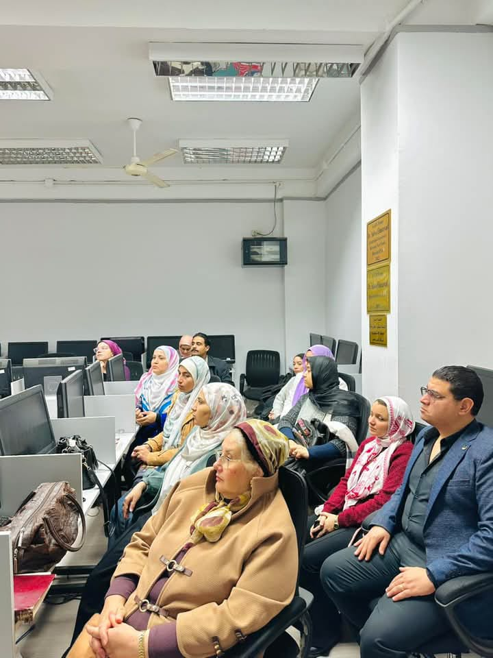
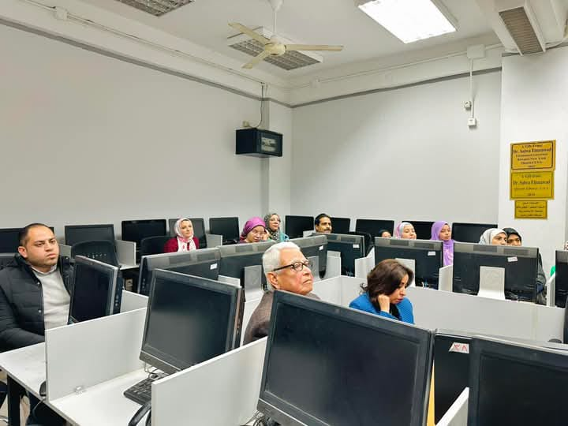

استخدام مجموعة أدوات قواعد وصف المصادر وإتاحتها (RDA Toolkit) وخدمة تصنيف ديوي عبر الويب (WebDewey Service)
💡 في إطار سعي قسم المكتبات والوثائق والمعلومات المستمر لتعزيز جودة العملية التعليمية ودعم أعضاء هيئة التدريس
والهيئة المعاونة، نظم القسم محاضرة عامة متميزة بعنوان "استخدام مجموعة أدوات قواعد وصف المصادر وإتاحتها (RDA
Toolkit) وخدمة تصنيف ديوي عبر الويب (WebDewey Service)".
✨ الأستاذة/ نسرين عبد المجيد، رئيس قسم الفهرسة بمكتبة الإسكندرية، قدمت المحاضرة بحضور الأستاذة/ رانيا عثمان، مدير إدارة مؤسسات المعلومات والمهارات المهنية بمكتبة الإسكندرية، إلى جانب السادة أعضاء هيئة التدريس والهيئة المعاونة بالقسم.
خلال المحاضرة، استعرضت أ. نسرين كيفية استخدام الأدوات وتطبيقاتها العملية في بيئة العمل الفعّالة، مع تقديم شروحات تفصيلية حول أبرز المزايا التي توفرها هذه الأدوات لدعم عملية الفهرسة والتصنيف.
📌 وفي ختام المحاضرة، قام القسم بتكريم أ. نسرين عبد المجيد تقديرًا لجهودها المتميزة في تقديم هذه المحاضرة القيمة، ودورها الفعّال في نقل الخبرات والمعرفة المتخصصة إلى الحضور، مما ساهم في تعزيز مستوى الفهم والمهارات في هذا المجال.
صور من المحاضره







